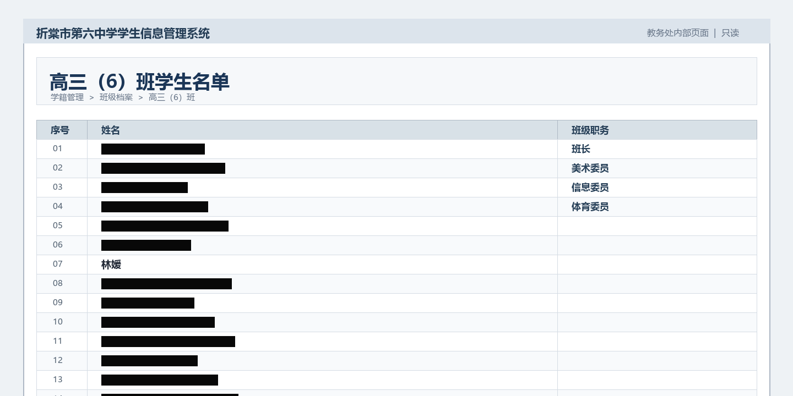

地方新闻
学校网站惊现“幽灵少女”，照片与学生档案均有记录，却无人记得她
近日，折棠市第六中学的班级网站出现一名身份不明的女学生。网站照片和校内记录均显示她名叫林媛，但包括同学、教师和家长在内，没有人承认认识这名学生。


据网友提供的网页截图，折棠市第六中学一处班级纪念网站中，陆续出现了多张所谓“幽灵少女”的照片。照片中出现的女学生被标注为林媛，网站内还能检索到她的姓名、班级以及家长信息。
然而记者联系到档案中登记的家长后，对方表示家中从未有过名叫林媛的孩子，并认为相关网页内容属于恶作剧。多名同班学生也表示，对照片中的女孩没有任何印象。
校方随后回应称，本次事件系班级体育委员擅自修改网站资料所致，学校已经给予处分。校方希望相关学生好自为之，不要继续传播不实信息，以免影响班级和学校名誉。